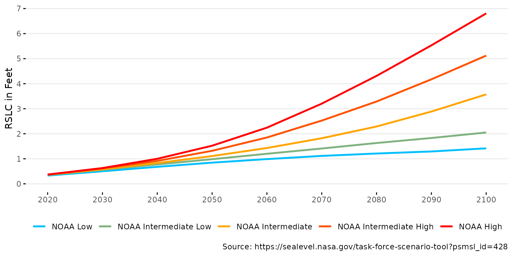

Installation
Install the package from r-universe as follows. The source code is available on GitHub.
# Install slrcsap in R:
install.packages('slrcsap', repos = c('https://tbep-tech.r-universe.dev', 'https://cloud.r-project.org'))Load the package in an R session after installation:
library(slrcsap)Usage
The package includes two core workflows to download and plot data relevant to assess sea level rise risks in the Tampa Bay region. The first workflow retrieves and plots historical sea level data and the second retrieves and plots sea level rise scenario data. Default arguments for all functions are set for the tidal gauge at St. Petersburg, FL. The content below demonstrates how to use the functions in this package for each workflow.
Sea level Data
Sea level data are downloaded from the NOAA Tides and Currents website. The data are available for all NOAA tide gauges and is setup to download data for the St. Petersburg, FL gauge (NOAA ID 8726520) by default. The data is read directly into R from the URL https://tidesandcurrents.noaa.gov/sltrends/data/8726520_meantrend.txt. The data for St. Petersburg, includes monthly mean sea level (MSL) values from 1947 to the present, including a seasonal correction.
# Download sea level data for St. Petersburg
spsealevel <- get_sealevel()
head(spsealevel)
#> gauge Year Month date msl_m msl_ft
#> 1 8726520 1947 1 1947-01-01 -0.063 -0.2066929
#> 2 8726520 1947 2 1947-02-01 -0.132 -0.4330709
#> 3 8726520 1947 3 1947-03-01 -0.142 -0.4658793
#> 4 8726520 1947 4 1947-04-01 -0.150 -0.4921260
#> 5 8726520 1947 5 1947-05-01 -0.086 -0.2821522
#> 6 8726520 1947 6 1947-06-01 -0.064 -0.2099738Data for alternative stations can be obtained using the
gauge argument.
# Download sea level data for Cedar Key
cksealevel <- get_sealevel(gauge = 8727520)
head(cksealevel)
#> gauge Year Month date msl_m msl_ft
#> 1 8727520 1914 4 1914-04-01 -0.170 -0.5577428
#> 2 8727520 1914 5 1914-05-01 -0.161 -0.5282152
#> 3 8727520 1914 6 1914-06-01 -0.142 -0.4658793
#> 4 8727520 1914 7 1914-07-01 -0.129 -0.4232284
#> 5 8727520 1914 8 1914-08-01 -0.098 -0.3215223
#> 6 8727520 1914 9 1914-09-01 -0.186 -0.6102362The sea level data can be plotted using the
plot_sealevel() function.
# Plot sea level data for St. Petersburg
plot_sealevel(spsealevel)
# Plot sea level data for Cedar Key
plot_sealevel(cksealevel)
Various arguments for plot_sealevel() can change the
appearance of the plot. Below, the color, units, and x-axis range are
modified
# Change arguments for the plot
plot_sealevel(spsealevel, col = 'tomato1', units = 'm',
xrng = as.Date(c('2000-01-01', '2023-01-01')))
The plot is also a ggplot() object and can be modified
with additional ggplot2 functions. Below, the plot is modified to
add a title and change the theme.
# Add a title and change the theme
library(ggplot2)
plot_sealevel(spsealevel) +
ggtitle('Monthly Mean Sea Level (MSL) at St. Petersburg, FL') +
theme_grey()
Lastly, the plot can also be returned as a plotly object
using plotly = T.
# Create plotly output
plot_sealevel(spsealevel, plotly = T)Sea Level Rise Scenarios
Sea level rise scenarios can be downloaded using the
get_scenario() function. Data are downloaded from the Interagency Sea Level Rise Scenario Tool
website that uses regionally corrected NOAA 2022 curves. Details of the
methods used in this tool are found in the technical report [1]. The data are downloaded as an Excel sheet
to from the URL https://sealevel.nasa.gov/task-force-scenario-tool?psmsl_id=520,
set to St. Petersburg, FL by default. Emissions scenarios of NOAA
Intermediate Low, Intermediate, and Intermediate High are downloaded by
default, as recommended by the Climate Science Advisory Panel. The data
show relative sea level change (RSLC) from 2020 to 2150 for each
scenario in meters and feet.
# Download sea level rise scenarios for St. Petersburg
spscenario <- get_scenario()
head(spscenario)
#> # A tibble: 6 × 5
#> id scenario year slr_m slr_ft
#> <dbl> <fct> <dbl> <dbl> <dbl>
#> 1 520 NOAA Intermediate Low 2020 0.113 0.372
#> 2 520 NOAA Intermediate Low 2030 0.180 0.592
#> 3 520 NOAA Intermediate Low 2040 0.250 0.821
#> 4 520 NOAA Intermediate Low 2050 0.322 1.06
#> 5 520 NOAA Intermediate Low 2060 0.392 1.29
#> 6 520 NOAA Intermediate Low 2070 0.463 1.52Data for alternative locations and scenarios can be obtained using
the id and scenario arguments,
respectively.
# Download sea level rise scenarios for Cedar Key
ckscenario <- get_scenario(id = 428, scenario = c('Low', 'IntLow', 'Int', 'IntHigh', 'High'))
head(ckscenario)
#> # A tibble: 6 × 5
#> id scenario year slr_m slr_ft
#> <dbl> <fct> <dbl> <dbl> <dbl>
#> 1 428 NOAA Low 2020 0.101 0.332
#> 2 428 NOAA Low 2030 0.153 0.502
#> 3 428 NOAA Low 2040 0.207 0.679
#> 4 428 NOAA Low 2050 0.258 0.847
#> 5 428 NOAA Low 2060 0.301 0.988
#> 6 428 NOAA Low 2070 0.340 1.12The sea level rise scenarios can be plotted using the
plot_scenario() function. Note the default x-axis range
that extends only to 2100.
# Plot sea level rise scenarios for St. Petersburg
plot_scenario(spscenario)
# Plot sea level rise scenarios for Cedar Key
plot_scenario(ckscenario)
Various arguments for plot_scenario() can change the
appearance of the plot. Below, the color ramp, units, and x-axis range
are modified
# Change arguments for the plot
plot_scenario(spscenario, cols = c('green', 'blue', 'red'), units = 'm',
xrng = c(2020, 2150))
The plot is also a ggplot() object and can be modified
with additional ggplot2 functions. Below, the plot is modified to
add a title, subtitle, and change the theme.
# Add a title, subtitle and change the theme
plot_scenario(spscenario) +
labs(
title = 'Relative Sea Level Change Projections',
subtitle = 'Gauge 8726520, St. Petersburg, FL'
) +
theme_grey() +
theme(legend.position = 'bottom')Lastly, the plot can also be returned as a plotly object
using plotly = T.
# Create plotly output
plot_scenario(spscenario, plotly = T)